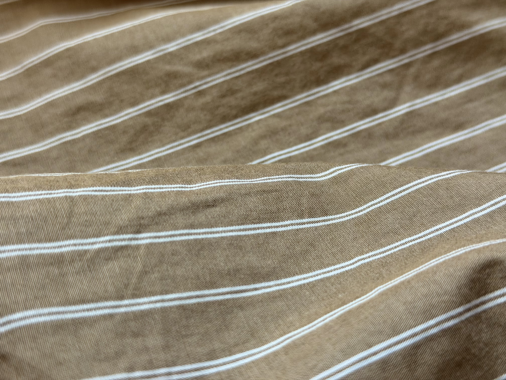

03 / Behind the garment
From cloth to
the last button.
A closer look at the stages that bring a shirt together. Choose a step to follow its path.

Stage 01 · Material
The fabric
The fine stripes and visible weave show the character of the cloth at the start of the shirt-making process.
40s two-ply cotton · breathable Oxford weave
Where the story begins
Oxford Cloth
Every Oxford shirt begins long before the first stitch. Raw cotton is cleaned, spun into yarn, woven into Oxford cloth and carefully finished to create its distinctive texture, strength and breathable feel.